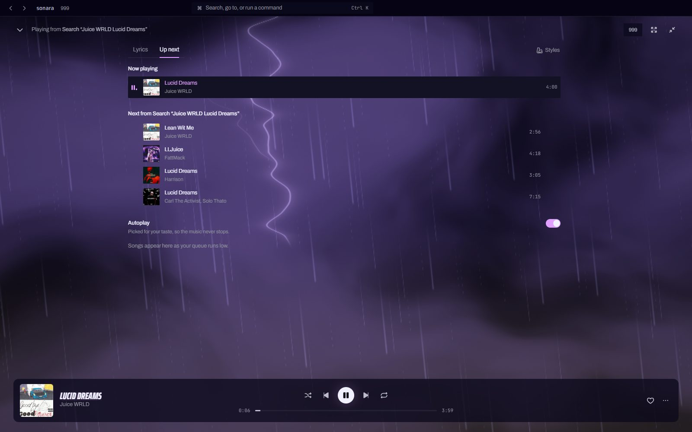
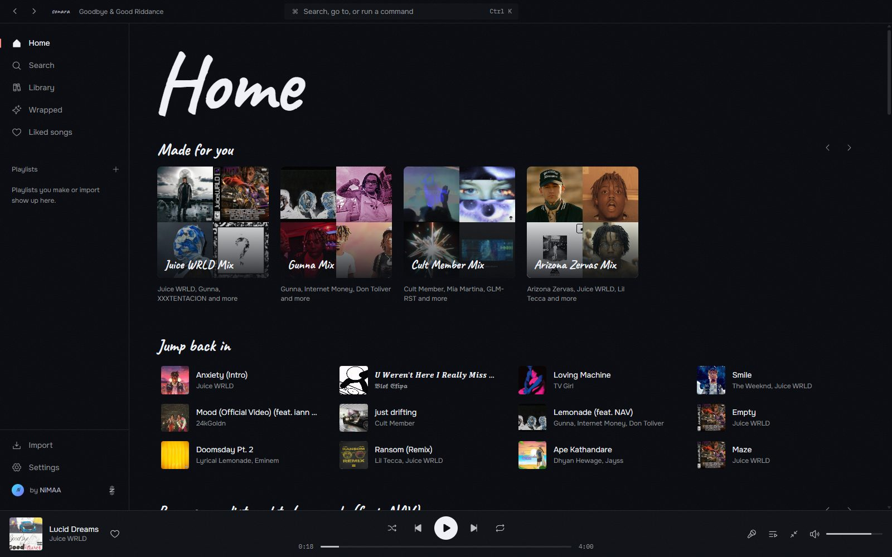
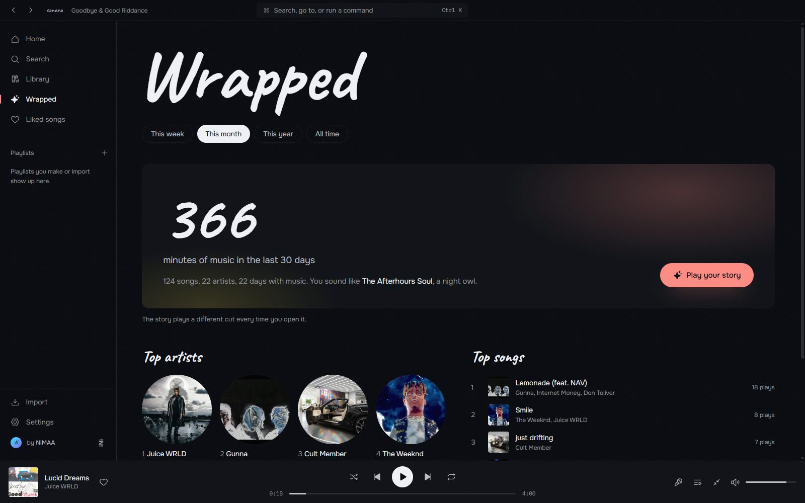

Every song gets
its own world.
sonara is a free music player for Windows. Lyrics that follow every word, backgrounds that hit with the beat, and a whole look that changes to fit what you play.

33 styles. It picks the one that fits.
Play Juice WRLD and the room turns into a purple storm. TV Girl gets an old film reel, a Sinhala love song gets moonlight on water, Cult Member gets a neon tunnel. sonara reads the artist, the genre and the cover, then changes the type, the colors, the layout and the scene behind the lyrics. Same album, same look, every time. Or open Styles next to the lyrics and pick one yourself, each previewed on the song you're playing.
Backgrounds that hit with the beat.
Behind the lyrics, a living scene listens to the music. In 999, lightning strikes on the big kicks and branches across the clouds on every hi-hat. Embers flare, snow glints, a candle-lit sigil turns, film flickers. The words themselves stay perfectly still and easy to read.
- Lyrics synced word by word, with a fullscreen mode
- Album styles built from the real Juice WRLD covers
- Smooth at full frame rate, calm when the window is in the back
It learns what you love.
Up next works the way it should: songs you queue play first, then the rest of the album, then picks made for your taste so the music never stops. Home fills with mixes built around your favorite artists, and new ones you'll probably like.
- Search shows results while you type
- Songs start in seconds, the next ones are ready before you ask
- Made for you mixes, top artists, artists to discover

Wrapped, whenever you want it.
Your week, month, year or all time as a story you tap through. Guess your number one before it's revealed, see your listening clock, meet your sound persona, and save the card. It plays a different cut every time you open it.

No ads, no accounts
Nothing to sign up for. No tracking. Your library lives on your computer.
Made for every language
Sinhala, Hindi and Tamil lyrics render properly, with styles made for love songs.
Updates itself
New versions download in the background. One click to restart.
Mini player and media keys
A small always-on-top player, tray controls and global shortcuts.
Your playlists, anywhere
Import from YouTube links or a Spotify and Apple Music export.
Command palette
Ctrl K to search, jump anywhere, or change the style.
Three clicks to music.
- Download the installer for Windows.
- Run it. If Windows shows a blue SmartScreen box, choose More info, then Run anyway.
- Search and play. The first launch takes about a minute while sonara sets itself up.